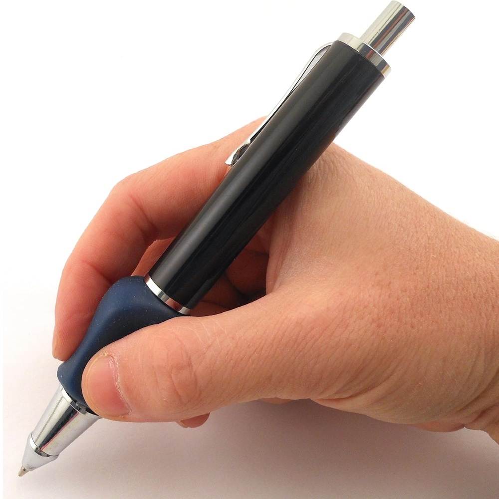
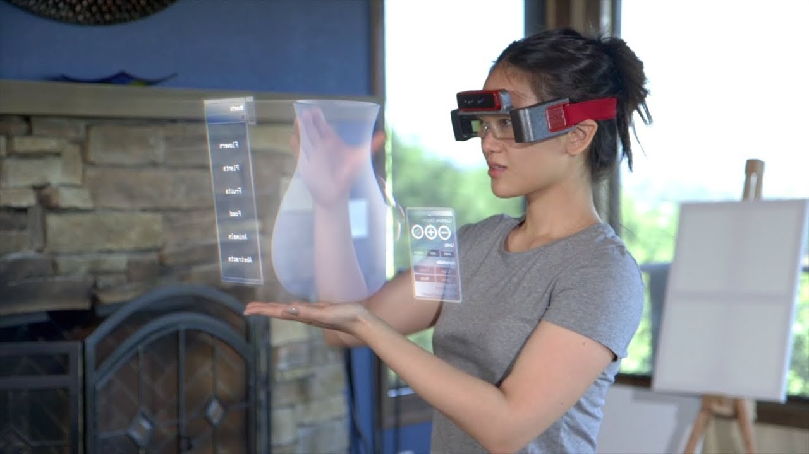
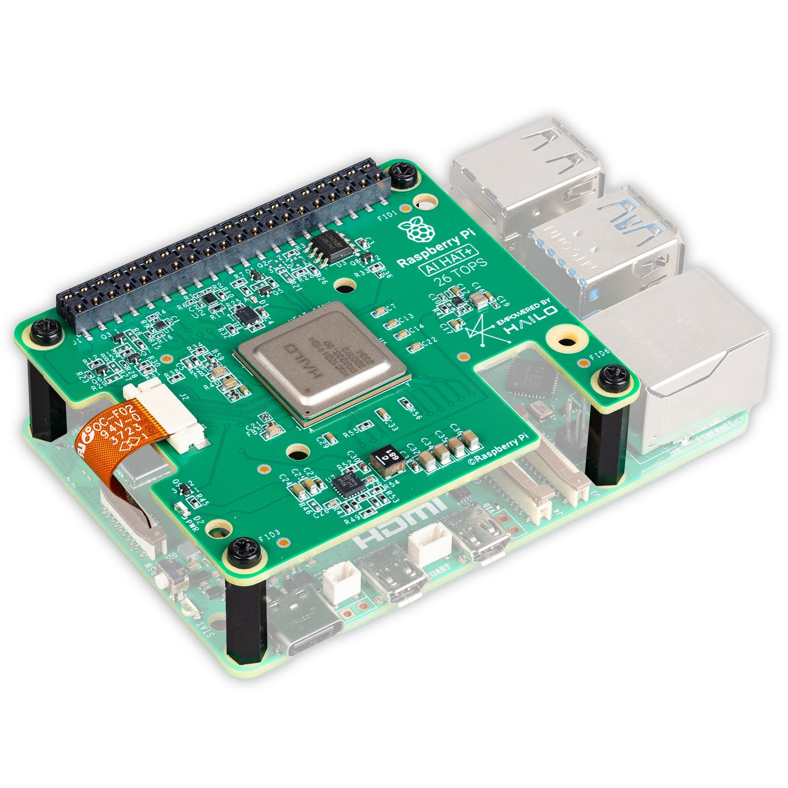
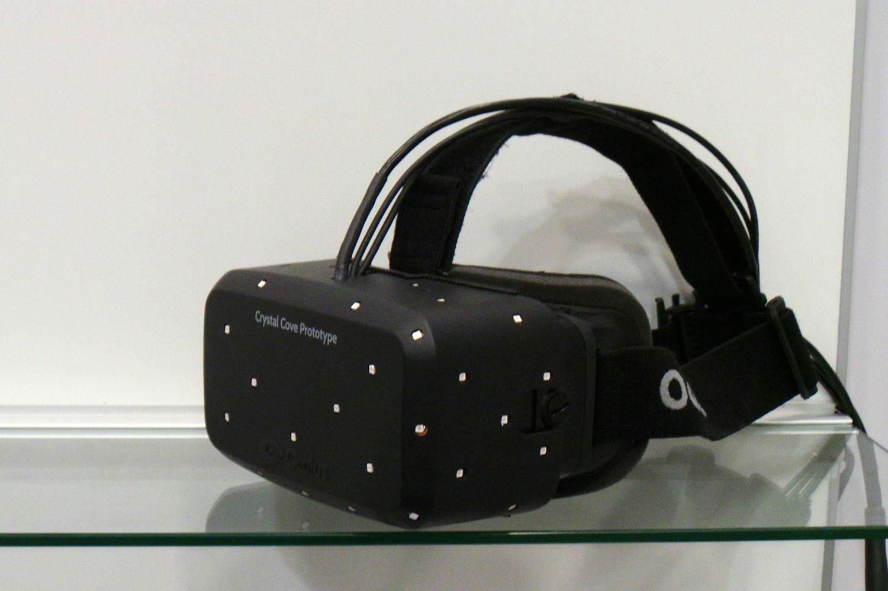

I have a pair of XReal Air glasses which connect to a Raspberry Pi, and to an onboard camera which forms the basis of an Augmented Reality CAD system.
My first idea is a pen-like controller containing an IMU sensor, button, and rotary encoder, which connects to my Raspberry Pi and allows me to draw designs in the real world and convert them into 3D shapes in augmented reality.
The IMU would encode angular orientation, allowing rotation of objects. The button would allow selection and manipulation of points, and the rotary encoder could control extrusion into the third dimension. The challenge with this is how does the Raspberry Pi know where the controller is in space relative to the glasses/onboard camera? Maybe this could be done with LEDs, or a specific calibration position?
This idea would involve connecting sensors to an ESP32 (preferred due to size), with communication to a Raspberry Pi over Bluetooth due to lower latency compared to WiFi.
Inspiration: Meta Spaceglasses inspiration article



A pair of calipers that broadcasts measurements and orientation via an ESP32/Arduino to a Raspberry Pi, displaying results in AR glasses. This would allow precise real-world measurements to be transferred into CAD and be displayed to the user in real time.
However, this is more of the inverse of what I want — it focuses on capturing existing objects rather than creating new designs in AR.
A small physical workbench with LED markers defining a coordinate system. AR glasses would anchor to the markers, enabling spatial design in context using hand tracking. Introducing hand tracking, even with this bench acting as the anchor, it's a lot for a short period of time.
Other challenges include determining the role of the microcontroller, sizing the platform appropriately for the 6-week timeframe, and ensuring it is portable.

Inspiration: Holomat reference